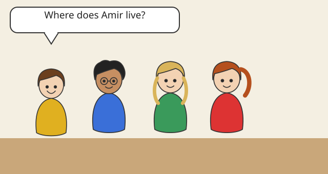
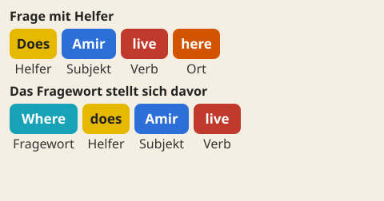

Who, what, where, when, why, how, whose
Mit einem KI-Tutor lernen
Ein KI-Tutor erklärt dir diese Seite und hilft dir bei den Aufgaben. Wähl deinen Assistenten:
Mit Claude öffnen Mit ChatGPT öffnen Mit Mistral Vibe öffnen
Du nutzt dein eigenes Konto beim Anbieter. Der Assistent ist kein Angebot von lernapps.net: lernapps liefert nur Inhalte und Aufgaben. Die Wahl gilt für alle Seiten, nur auf diesem Gerät.
Peter fragt Ellie

Von links: Peter (gelbe Jacke) fragt, daneben Amir (Brille), Sophie (Zöpfe) und Ellie (roter Pferdeschwanz). Peter fragt Ellie.
Quelle: eigene Zeichnung. Lizenz: CC-BY-4.0.Peter will mehr über Amir wissen und fragt Ellie: „Where does Amir live?“ Ein Yes oder No reicht als Antwort nicht.
Aufgabe
Lösung
Wo Amir wohnt. richtige Antwort
Where heißt „wo“. Peter fragt nach dem Ort, an dem Amir wohnt.
Wann Amir kommt.
Wann heißt when, nicht where.
Wer Amir ist.
Wer heißt who, nicht where.
Das Fragewort sagt, wonach gefragt wird. Where fragt nach dem Ort.
Das kannst du danach: Du fragst mit sieben Fragewörtern und weißt, wo sie in der Satzleiste stehen.
Das Fragewort stellt sich davor
Das Fragewort ist eine neue Karte in Türkis. Sie legt sich vor den Helfer. Dahinter steht alles wie in einer Frage mit do: Helfer, Subjekt, Verb ohne Endung.

Das türkise Fragewort Where legt sich vor den gelben Helfer. Der Rest bleibt gleich.
Quelle: eigene Zeichnung. Lizenz: CC-BY-4.0.| Fragewort | Bedeutung | Beispiel |
|---|---|---|
| who | wer | Who is he? |
| what | was | What does Ellie read? |
| where | wo | Where is the book? |
| when | wann | When is the film? |
| why | warum | Why is Peter happy? |
| how | wie | How are you? |
| whose | wessen | Whose book is this? |
Merke
Fragewort, Helfer, Subjekt, Verb. Das Verb geht ohne Endung: What does Ellie read? Bei be (is, are) steht be gleich hinter dem Fragewort: Who is he?
| Wort oder Ausdruck | Bedeutung |
|---|---|
| play | spielen |
| live | wohnen |
| here | hier |
| eat | essen |
| like | mögen |
| watch | anschauen |
| read | lesen |
| football | Fußball |
| tea | Tee |
| pizza | Pizza |
| film | Film |
| book | Buch |
| at school | in der Schule |
| in the park | im Park |
| on Friday | am Freitag |
| on Sunday | am Sonntag |
| this | dieses / das |
| at home | zu Hause |
| every day | jeden Tag |
| happy | froh |
Übung
Aufgabe
Lösung
Richtige Antwort: 1. Where, 2. does, 3. Sophie, 4. live
Das Fragewort kommt zuerst, dann der Helfer, dann das Subjekt und zuletzt das Verb ohne Endung.
Aufgabe
Lösung
Richtige Antwort: In the park. – Where; On Friday. – When; Pizza. – What; Ellie. – Who
Das Fragewort richtet sich danach, was die Antwort sagt. Ein Ort ist where, eine Zeit when, eine Sache what und eine Person who.
Aufgabe
Wähle das richtige Fragewort.
Tipp
Frage dich, was die Antwort sagen soll. Ein Ort, eine Zeit, eine Sache oder eine Person?
- Wo spielt Peter Fußball? → … does Peter play football?
- Was isst Ellie in der Schule? → … does Ellie eat at school?
- Wann schaut Amir einen Film an? → … does Amir watch a film?
- Wessen Tee ist das? → … tea is this?
Lösung
- Where does Peter play football?
- What does Ellie eat at school?
- When does Amir watch a film?
- Whose tea is this?
Aufgabe
Schreibe die ganze Frage. Denke an den Helfer.
Tipp
Schreibe zuerst das Fragewort, dann den Helfer, dann das Subjekt und das Verb ohne Endung.
- where · Sophie · live
- what · Peter · eat · at school
- when · you · watch · a film
- why · Ellie · like · tea
Lösung
- Where does Sophie live?
- What does Peter eat at school?
- When do you watch a film?
- Why does Ellie like tea?
Aufgabe
In jeder Frage steckt ein Fehler. Schreibe die Frage richtig.
Tipp
Prüfe, ob der Helfer da ist und ob das Verb ohne Endung steht.
- Where you live?
- What does Amir plays?
Lösung
- Where do you live?
- What does Amir play?
Aufgabe
Schreibe die Frage auf Englisch.
Tipp
Welches Fragewort passt? Dann Helfer, Subjekt, Verb.
- Wo wohnt Ellie?
- Was isst du in der Schule?
- Wann spielt Peter Fußball?
Lösung
- Where does Ellie live?
- What do you eat at school? (auch richtig: What do you eat in school?)
- When does Peter play football?
Aufgabe
Hör zu und schreibe, was du hörst.
- KI
- KI
- KI
Lösung
- Where does Amir play football on Sunday?
- What do you eat at school every day?
- When does Ellie read a book?
Quizfragen für Mr Hill
Aufgabe
Hör zu, sprich nach und nimm dich auf. Vergleiche dann mit dem Original.
Tipp
Hör die Frage zuerst. Sprich dann langsam nach und betone das Fragewort.
- Why does Peter like football?KI
- What does Sophie eat at home?KI
- Do Ellie and Amir live here?KI
Zum Aufnehmen braucht diese Aufgabe JavaScript. Die Beispiele kannst du auch ohne anhören.
Lösung
- Why does Peter like football?
- What does Sophie eat at home?
- Do Ellie and Amir live here?
Offene Aufgabe
Mr Hill sammelt Fragen für das Klassenquiz. Schreibe drei Fragen an Sophie, Ellie, Peter oder Amir mit drei verschiedenen Fragewörtern.
Eine gute Antwort enthält:
Lösung
Where does Sophie live? What does Peter eat at school? When do you watch a film?
Wie es weitergeht
Mr Hill liest die Quizfragen vor. Bei „Who likes tea?“ stutzt Peter. Dort fehlt der Helfer. Warum, zeigt die nächste Seite.